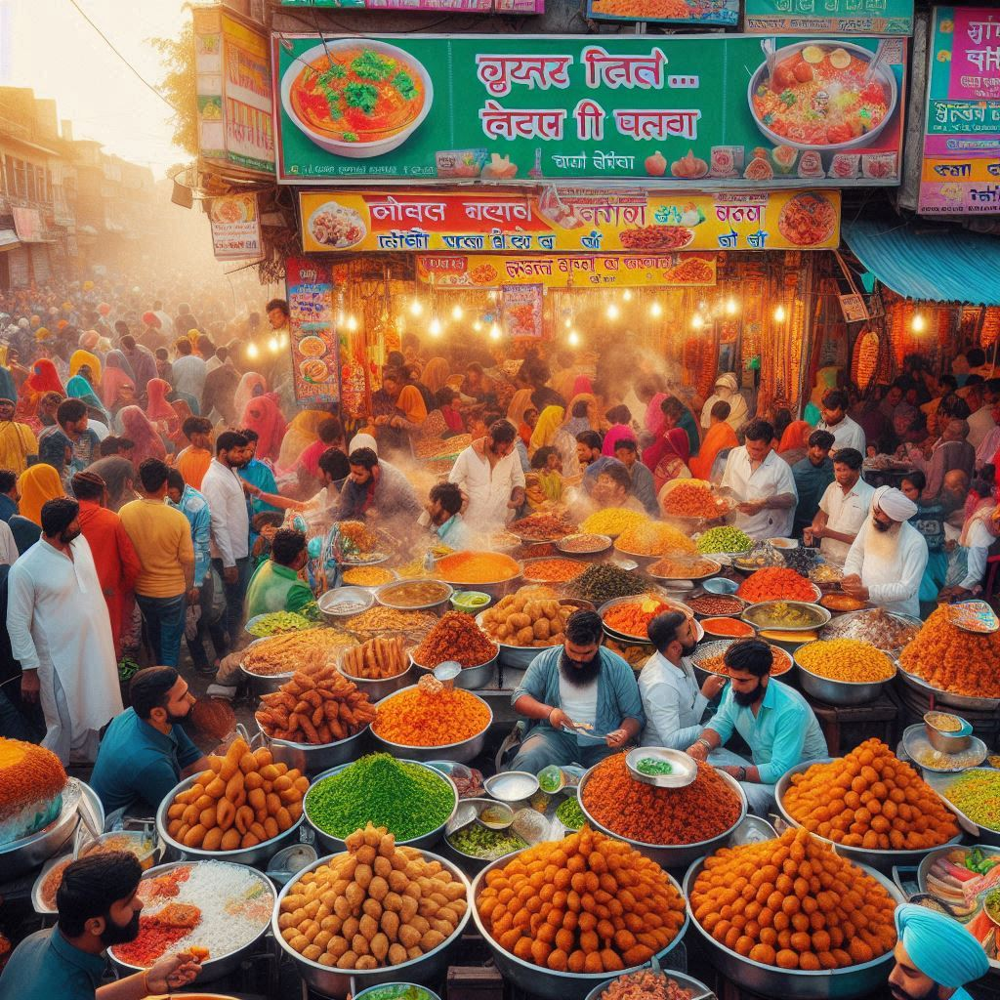

Chandigarh’s cuisine is dominated by Punjabi food, which is known for its rich, buttery, and hearty flavors. Traditional Punjabi dishes feature generously spiced curries, freshly prepared bread, and wholesome lentils.
2.Popular Dishes in Chandigarh:
Sarson da Saag and Makki di Roti - Sarson da Saag (mustard greens) and Makki di Roti (cornmeal flatbread) is a classic Punjabi dish enjoyed especially during the winter months. The saag is made with mustard leaves, spinach, and fenugreek leaves cooked with spices and butter or ghee. It is served with a dollop of butter and a side of pickles and jaggery.
Butter Chicken - Chandigarh’s love for butter chicken is a testament to its Punjabi roots. This dish features tender pieces of chicken cooked in a creamy tomato-based sauce, flavored with butter, and served with naan or rice. It’s rich, mildly spiced, and often garnished with cream.
Chole Bhature - A favorite street food and a beloved breakfast option, chole bhature consists of spicy chickpeas (chole) served with deep-fried fluffy bread (bhature). It’s usually accompanied by onions, pickles, and green chutney.
Paneer Tikka - Paneer (Indian cottage cheese) is marinated in a blend of yogurt and spices, skewered, and grilled or baked. This dish is a favorite appetizer or snack in Chandigarh, often served with mint chutney and lemon slices.
Amritsari Kulcha - A crisp, stuffed bread with a spicy filling (typically of potatoes or paneer), Amritsari kulcha is a popular dish in Chandigarh, especially when served with chole (chickpea curry) and a tangy tamarind chutney.
Rajma Chawal - Rajma chawal (kidney beans with rice) is a comforting and wholesome dish, commonly enjoyed as a hearty lunch. The rajma is cooked in a flavorful gravy of tomatoes, onions, and spices, paired with steaming rice.
Lassi - A refreshing and rich yogurt-based drink, lassi is popular in Chandigarh, especially the sweet lassi topped with a layer of cream. Salted lassi and mango lassi are also common variations.
Parathas - Chandigarh residents love parathas for breakfast, lunch, or dinner. These stuffed flatbreads can be made with a variety of fillings like potatoes (aloo), paneer, cauliflower (gobi), or radish (mooli). They are served with butter, yogurt, and pickles.
3.Street Food in Chandigarh:
Golgappa (Pani Puri) - Known as golgappa in Chandigarh, these crispy puris filled with tangy, spicy water and potatoes are a favorite street food. Vendors across the city offer their own variations of this popular snack.
Tikki - Aloo tikki is a deep-fried patty made from mashed potatoes and spices, served with tamarind and mint chutney, yogurt, and a sprinkle of spices. This dish is a popular street snack in the evenings.
Samosa - Samosas are triangular pastries stuffed with spiced potatoes, peas, and occasionally paneer or meat. They are deep-fried and served hot with mint and tamarind chutneys.
Chaat - Chaat is a combination of various street snacks like papdi (crispy wafers), boiled potatoes, chickpeas, yogurt, tamarind chutney, and various spices. It’s tangy, spicy, and sweet all at once, making it a beloved street food.

4.Haryanvi Influence:
As Chandigarh also serves as the capital of Haryana, traditional Haryanvi dishes are part of the local cuisine. These dishes are simpler compared to Punjabi food but are just as hearty.
Bajre ki Roti and Kheer - Bajre ki roti (millet flatbread) is commonly eaten with ghee and gur (jaggery) or with curd. It’s often accompanied by dishes like kadhi or vegetables. Kheer (rice pudding) made from milk, rice, and sugar is a popular sweet dish in Haryana and is enjoyed in Chandigarh, especially during festivals.
Kadhi - A thick yogurt-based curry with gram flour dumplings (pakoras), kadhi is a simple yet flavorful dish eaten with rice or roti.
5.Fusion and Modern Cuisine:
Given Chandigarh’s cosmopolitan character, you’ll also find a variety of cuisines from around the world. Italian, Chinese, Continental, and fast food have become part of the city’s food culture, with many restaurants offering diverse options.
Cafe culture is popular, with numerous cafes and bakeries offering everything from sandwiches and pastas to pastries and desserts like cheesecakes and tarts.
6.Sweets:
Chandigarh has a sweet tooth, and you’ll find a variety of traditional Indian sweets in the city. Some popular ones include:
Gulab Jamun – Deep-fried dough balls soaked in sugar syrup.
Jalebi – Spiral-shaped deep-fried batter soaked in sugar syrup.
Barfi – A dense milk-based sweet that comes in various flavors like pistachio, almond, or coconut.
Kheer – A rice pudding made with milk, sugar, and flavored with cardamom, nuts, and saffron.
Conclusion:
Chandigarh’s food culture offers a delightful mix of traditional Punjabi flavors, Haryanvi simplicity, and modern influences. Whether enjoying rich butter chicken or relishing street food like golgappa, the food in Chandigarh is a reflection of its cultural diversity and love for hearty, flavorful meals.